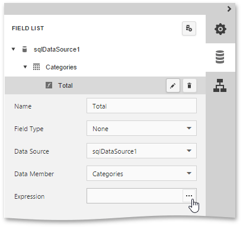
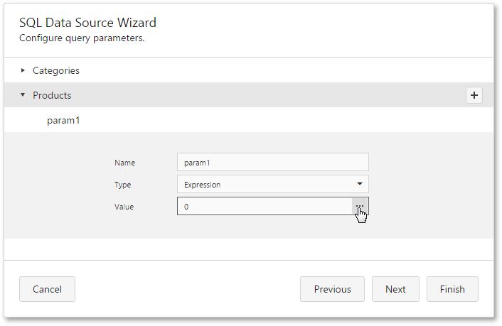
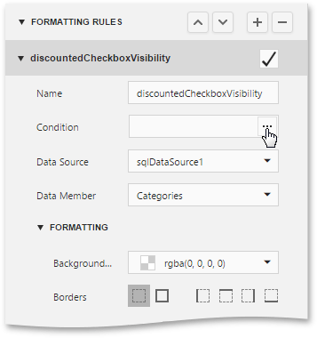

Expression Editor
The Expression Editor provides the capability for constructing expressions in the Web Report Designer.
This topic consists of the following section.
Expression Editor Overview
The Expression Editor's visual interface allows you to type an expression manually or select predefined functions, operators and operands. The editor supports a variety of aggregate, date-time, logical, math and string functions. You can also use logical and arithmetic operators and fields of a data source to which a report is bound.

After you finish constructing an expression, click Save. If an expression contains any errors, the  icon appears meaning that the expression should be rewritten.
icon appears meaning that the expression should be rewritten.
Expression Syntax
The following syntax conventions should be taken into account when using the Expression editor.
- A data field is referenced in the expression by enclosing its name in square brackets (e.g., [ProductName]).
- Report parameters are inserted using the "Parameters." prefix before their names (e.g., [Parameters.parameter1]).
- String values are denoted with apostrophes. To embed an apostrophe into an expression's text, type a double apostrophe (e.g., 'It''s sample text').
- Date-time constants should be enclosed with hashtags (e.g., [OrderDate] >= #1/1/2016#).
- To specify a null reference (one that does not refer to any object), use a question mark (e.g., [Region] != ?).
- If an expression involves the use of different types, you can convert them to the same type using dedicated functions (e.g., Max(ToDecimal([Quantity]),[UnitPrice])).
Using the Expression Editor
Expressions can be used for calculating query parameters and calculated fields values as well as for specifying conditions of formatting rules.
To edit an expression for a calculated field, access its settings in the Field List and click the ellipsis button for the Expression property.

To specify an expression for a query parameter, in the Configure Query Parameters wizard page, set the parameter type to Expression and click the ellipsis button for the Value property.

To construct a condition for a formatting rule, access its settings in the Properties panel and click the ellipsis button for the Condition property.

If the specified expression does not return a Boolean value, the error
icon appears on an attempt to save the condition.